WNPV stands for Wii Network Profiles Viewer, it's a homebrew app that allows you to see & edit your Wii's network
profiles just like in the Wii settings with better control over what is enabled or not.
The app comes with a simple Text User Interface (TUI for short), so the app is lightweight and
doesn't take more than half a megabyte in your storage device.
Upon starting the app, you'll get greeted with this screen :
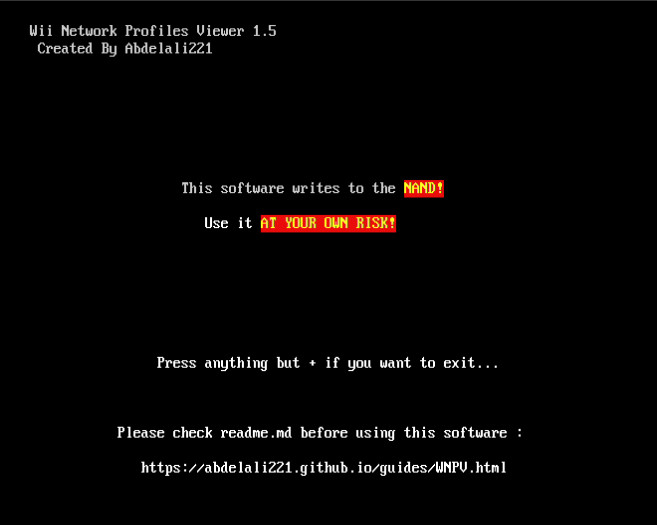
Press PLUS to proceed. After that you'll see the path & size of the config file.
You should now see something like this :
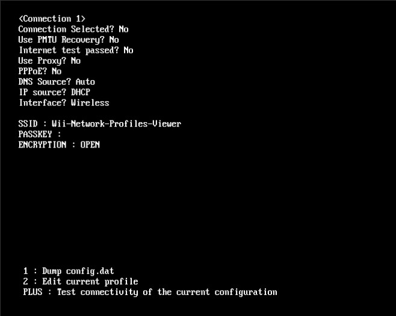
This shows all the profile infos, you can press left or right on the D-PAD
to switch between the different profiles.
The app gives you the ability to dump the config.dat to your SD card incase something happens,
or to analyse it on your computer if you're a dev for example.
In order to dump the file, simply press ONE while on this screen :
If the dump is successful, you'll see this :
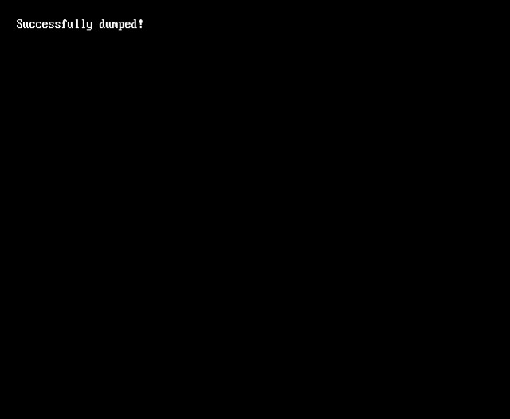
If nothing happens, it means that the dump didn't occur.
You can test the connectivity between the Wii and your router
by pressing PLUS while being on this screen :
After pressing PLUS you should see this :
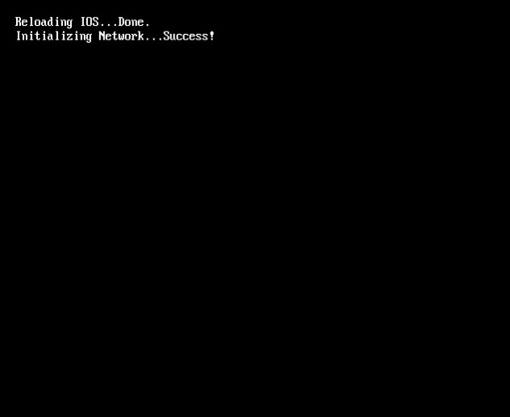
If instead the test fails it means that there's an
issue with the configuration.
Before editing, select the desired profile, then press TWO to enter edit mode :
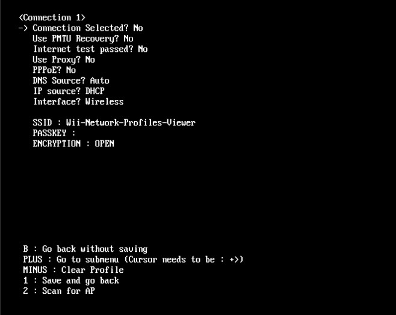
You will see like above an arrow pointing to the first setting,
you can press A to toggle it :
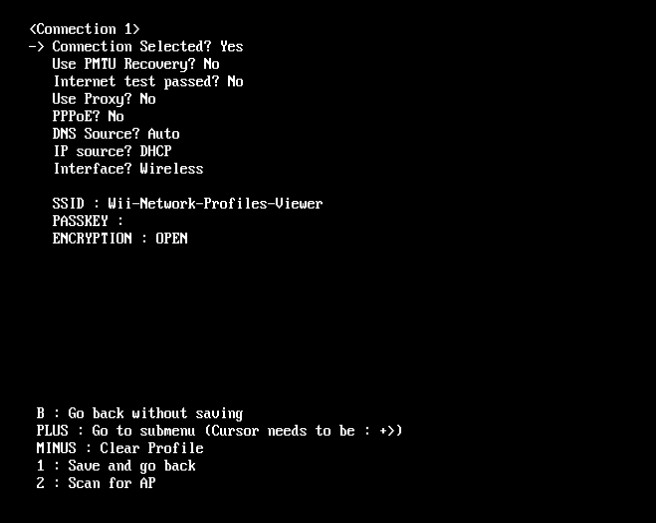
Some options have a before them,
that means that there's a submenu for those options.
Submenus can contain three types of settings; Numerical, String or
Address.
Let's start by editing the Proxy port :
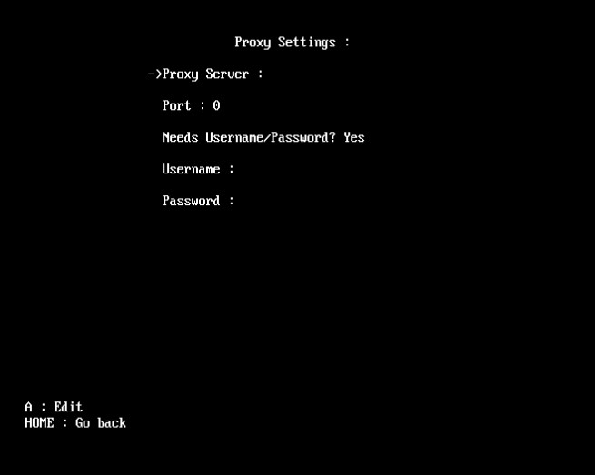
If you press A, a Numpad will show up on the screen :
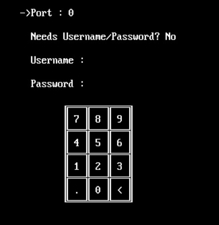
By aiming at it with the Wii Remote, you can write a numerical value
(In this case it's the Port, which has to be between 0 & 34463).
We'll select the Proxy Server setting :
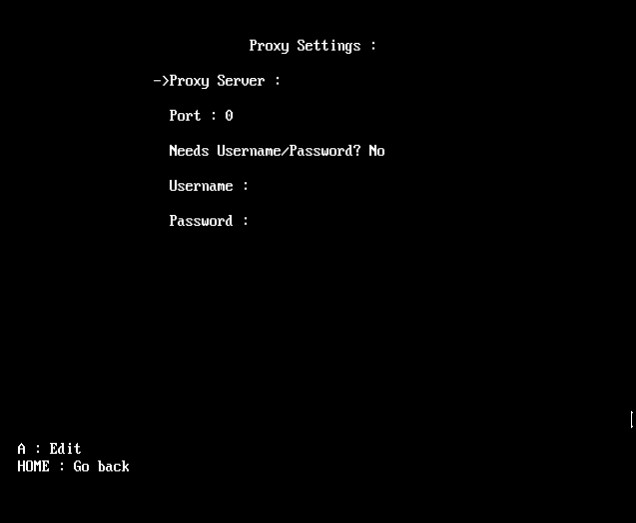
If you press A, a keyboard will show up on the screen :
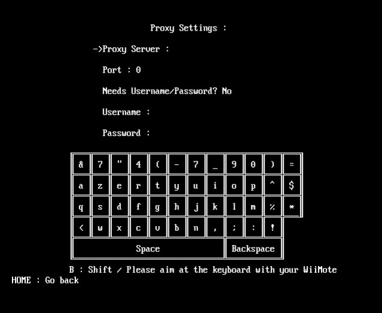
By aiming at it with the Wii Remote, you can write a string
(In this case it's the Proxy Server).
When opening the IP or DNS submenu you get something like this :
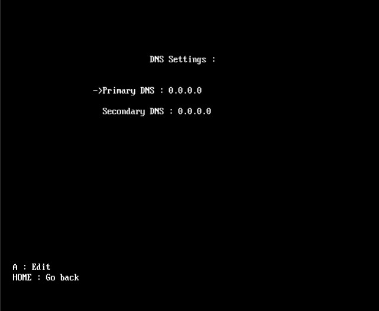
If you press A on any of the options, a Numpad will show up on the screen :
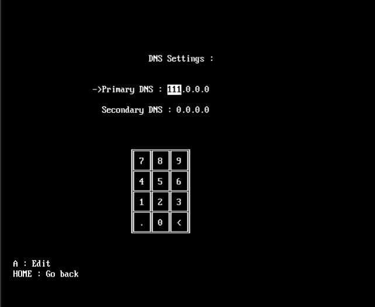
Similarly to the Numerical setting, you aim at the Numpad to write,
but each option has four values to configure.
When you're done changing the first value, you move to the next by pressing on the
dot character (The app automatically does that if the next digit makes it bigger than 255).
WNPV is the first Wii homebrew that supports WiFi scanning (wdexample doesn't count lol),
which means that you can configure network profiles just like in the Wii Menu.
In order to do so, you first have to select the desired
profile & enter editing mode :
Then press 2 to initiate a Scan :
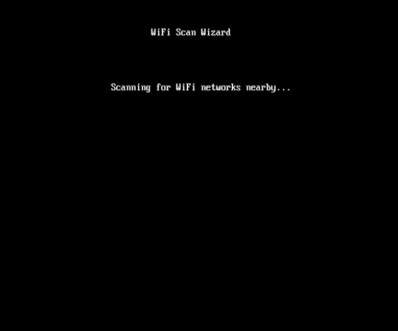
After a couple of seconds you'll see a list of access points (If there are any nearby),
choose the one you want to connect to :
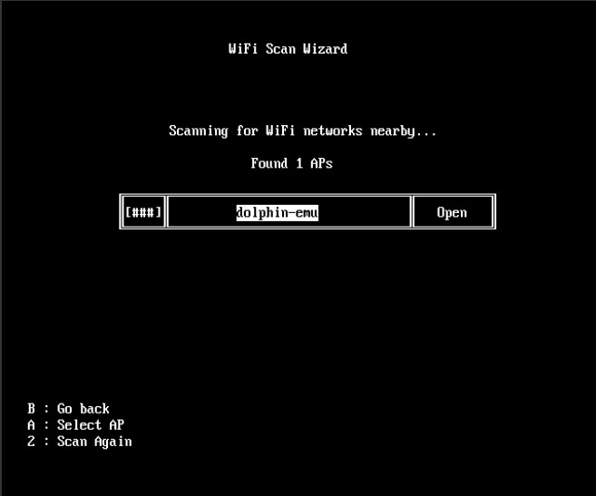
If the AP is secured (with WPA/WPA2 or WEP),
you will be prompted to enter the WiFi password.
Note : If the AP is secured with WPA/WPA2, make sure that the password is at least
8 characters long, and if the security is WEP then your password will be either 5
or 13 characters long.
If you fail to enter the correct length, the app will automatically switch the security
to open so you can set it properly in the WiFi settings submenu.